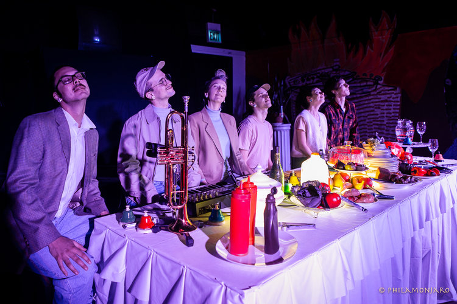

<!doctype html>
<html lang="eng"></html>
<head>
<meta charset="UTF-8">
<meta name="viewport" content="width=device-width, initial-scale=1.0">
<title>chris wood</title>
	<link href="CSS/stylesheet_v1.css" rel="stylesheet" type="text/css">
</head>

<body>
	<script src="_script/moving-sidebar.js"></script>
		
<!-- *********************************************  SIDEBAR  ********************************************* -->
		<div class="background">	
		<div class="sidebar">
											
											<!--TITLE-->
				<h1><a class="title" href="#page0" title="Go to home page"><h1> chris wood</h1></a> </h1>
				
											<!--NAV-->
				<div class="sidebar-flex">
					<a href="m_s_sentics.html"><div class="sidebar-item" id="nav1" title="matte screen VDR">
						<h5>matte_screen: SENTICS</h5></div></a>
					<a href="m_s_faith.html"><div class="sidebar-item" id="nav2" title="matte screen 01faith and a sense of truth">
						<h5>matte_screen: faith and a sense of truth</h5></div></a>
					<a href="m_s_genesis.html"><div class="sidebar-item" id="nav3" title="matte screen 00GENESIS">
						<h5>matte_screen: GENESIS</h5></div></a>
					<a href="othersensations.html"#page4""><div class="sidebar-item" id="nav4" title="Other Sensations">
						<h5>Other Sensations</h5>
						</div></a>
					<a href="GMS.html"><div class="sidebar-item" id="nav5" title="Greater Minds Society">
						<h5>Greater Minds Society</h5></div></a>
					<a href="TINMS.html"><div class="sidebar-item" id="nav6" title="This is not my self">
						<h5>THISISNOTMY/SELF</h5></div></a>
					<a href="socialstructure1.html"><div class="sidebar-item" id="nav7" title="Social Structure 1">
						<h5>&nbsp;Social Structure 1</h5></div></a>
					<a href="virtualsuite.html"><div class="sidebar-item" id="nav8">
						<h5>Virtual Suite No. 1 in C Major</h5></div></a>
					<a href="recovery.html"><div class="sidebar-item" id="nav9" title="recovery">
						<h5>recovery_</h5></div></a>
					<a href="BEANSGENESIS.html"><div class="sidebar-item" id="nav10" title="Beans genesis">
						<h5>BEANS GENESIS</h5></div></a>
					<a href="yikes.html"><div class="sidebar-item" id="nav11" title="yikes">
						<h5>&#40;yikes&#41;</h5></div></a>
					</br>
					</br>
					</br>
					<a href="about.html"><div class="sidebar-item right" id="nav12" title="bio/cv/contact">
						<h5>bio / cv / contact</h5></div></a>
					<a href="http://www.mocrep.org/" target="_blank"><div class="sidebar-item right" id="nav13" title="about mocrep">
						<h5>mocrep</h5></div></a>
					<a href="discocrystall.html"><div class="sidebar-item right" id="nav14" title="about disco crystall">
						<h5>Disco Crystall</h5></div></a>
				</div>
			</div>
		
		
<!-- *********************************************  MAIN CONTENT  ********************************************* -->
		<div class="maincontent"> 
			
		<!-- ************  homepage  ************ -->
			<div id="page0" class="block">
			</div>
				
		<!-- ************  matte_screen SENTICS  ************ -->
			<div id="page1" class="block">
				<h2>matte_screen: VDR </br>
				&#91;Vibratory Decreation Ritual&#93; (2019-20)</h2>
				
				<div class="description-text">
				<p> At the unending advent of expanding digital processing power and a limited understanding of emotional processing methods, how can we create and hold physical social space in a way that is necessarily physical and social? How can we reclaim performance as a ritual space; a space to converge with our common experiences, reflect, and make new meanings together?
				</p>
				<p>
				Via their Vibratory Decreation Ritual (VDR), matte_screen seeks to re-assess, re-negotiate, and re-embody the complex potential of screen-based emotional experience. 
				<p>
				The ritual is rooted in the mission that our emotions are seated physically as biological scripts in the body, in relationship to gravity, and dependent on external stimuli to be felt. We need to attune these scripts: attune them in response to the compound qualities and environments of screen-based experience, attune them together so that we may learn from each other.
				</p>
				<p>
				In VDR m_s undergoes their invented process of machine-mirror-learning via their VDR_container: the body (personal and collective) is the object of encoding, undergoing a practice of integrating internet-derived-stimulus through the activation of space (physical sound) and body (physical movement).  
				</p>
				<p>
				matte_screen: VDR will be performed as part of the Emotional AI Symposium March 27-29 2020 at ZKM Karlsruhe. The ritual was developed during the residency "Emotional Artificial Intelligence" by the ZKM | Hertz-Lab at the ZKM | Center for Art and Media, Karlsruhe. This project takes place within the framework of the INTERFACES project with the support of the Creative Europe funding programme of the European Union.
				</p>
				</div>
			</div>
				
		<!-- ************  Other Sensations  ************ -->
		  	<div id="page4" class="block">
				<h2>Other Sensations (2019)</h2>
				
				<div class="description-text">
					<h4>created, directed, and performed by Mocrep members: Alex Ellsworth, Deidre Huckabay, Lia Kohl, Zach Moore, Andrew Tham and Chris Wood. </br>for TV, VCR, video, electronics, vibration motors, fake food, 24 pairs of tongs, woodblock, trumpet, melodica, squeaky toys, electric bass, drumset, table, flashing lights.
					</br>Neo-Futurarium - Chicago, IL - January 2019</h4>

					<p>Other Sensations was created as a companion piece to Mickel Maher’s Tedium (Theater Oobleck) and premiered at the 2019 Chicago International Puppet Theater Festival. An exploration of both boredom and transcendence, Other Sensations mixes video, sound, choreography and animated objects to create a world which questions the reality of choice and the idea of freedom. </p>

					<p>PRESS:</br>
					<em>“An eerie look at the myth of the American dream”</em> - Maggie Ward, SCAPI Magazine Puppets, Capitalism, and Déjà Vu: A Profile of Tedium and Other Sensations</p>

					<p><em>“an overall bizarre piece which I have come to love”</em> - Kenjiro Lee, Chicago Maroon In Chicago, Puppets Take Center Stage</p>
				</div>
		  	</div>
	
		<!-- ************  Greater Minds Society  ************ -->
		 	 <div id="page5" class="block">
				<h2>Greater Minds Society (2018)</h2>
					<div style="padding:56.25% 0 0 0;position:relative;"><iframe src="https://www.youtube.com/embed/zwrZq0gunEQ?controls=0" style="position:absolute;top:0;left:0;width:100%;height:100%;" frameborder="0" allow="autoplay; fullscreen" allowfullscreen></iframe></div>
				<div class="description-text">
					 <h4>created by chris wood in collaboration with mocrep and performed by those members of mocrep
					 </br>for 4 performers, 1 engineer, conductive-gel controllers, live sound, light, and vido
					 </br>performed by mocrep - Pro Arts Gallery, Oakland - April 27 2018</h4>
					<p>Greater Minds Society is a Theater Piece in Four Acts. 
					</br>The storyline of a dystopian live-work society offering to rid affect/emotional memory from their initiates is reinforced by experiments in collaboratively-devised movement, physical sonic situation, custom body circuits/systems, and theatrical confrontation ... in effect creating a framework through fiction to confront the trying process of living and creating in a social network sustained on screens.</p>
				</div>
				 </div>

		<!-- ************  THISISNOTMY/SELF  ************ -->
			<div id="page6" class="block">
				<h2>THISISNOTMY/SELF (2017)</h2>
				<div style="padding:56.25% 0 0 0;position:relative;"><iframe src="https://player.vimeo.com/video/223506735" style="position:absolute;top:0;left:0;width:100%;height:100%;" frameborder="0" allow="autoplay; fullscreen" allowfullscreen></iframe></div><script src="https://player.vimeo.com/api/player.js"></script>
				<div class="description-text">
					<h4>created by chris wood, performed by and in collaboration with anastasia clarke, kim nucci, simon/a otryba, kevin schwenkler
					</br>for 4 performers, 1 engineer, live sound and video, and machine learning computer
					</br>Signal Flow, Mills College - Oakland, CA - March 9 2017</h4>
				</div>
			</div>

		<!-- ************  Social Structure  ************ -->
			<div id="page7" class="block">
				<h2>Social Structure 1: my computer and you (2015)</h2>
				<div style="padding:56.25% 0 0 0;position:relative;"><iframe src="https://player.vimeo.com/video/168672221?title=0&byline=0&portrait=0" style="position:absolute;top:0;left:0;width:100%;height:100%;" frameborder="0" allow="autoplay; fullscreen" allowfullscreen></iframe></div><script src="https://player.vimeo.com/api/player.js"></script>
				<div class="description-text">
					<h4>6 hour performance-installation 
					</br>for performer, 4-channel audio, video, computer, conductive strips
					</br>Haas Gymnasium - Oakland, CA - December 2015</h4>
					<p>How are bodies socially situated within a structured space generated by the vibrations of sound (or lack there of)?
						</br>
					How does computer-based introversion effect human sociality?
						</br>
					Social Structure 1 explores how human sociality changes in two contrasting situations: computer-based introversion and direct physical connection. 
					The performer stands alone with eyes closed, connected to their computer through an ungrounded copper strip for 6 hours. Their ungrounded bodily signal is amplified, connects with their computer, and signals an audiovisual atmosphere in the space - composed from recordings of their personal computer activities.
					In front of the performer is another copper strip, connected to ground the performer's signal. A Sign asks "connect with me?" asking that any spectator stands on the strip and holds the hands of the performer - thus shorting the performer's signal / computer life, provoking audial/visual silence, and creating a directly focused social interaction.
					</p>
				</div>
				</div>

		<!-- ************  Virtual Suite  ************ -->
			<div id="page8" class="block">
				<h2>Virtual Suite No. 1 in C Major (2017)</h2>
				<div style="padding:56.25% 0 0 0;position:relative;"><iframe src="https://player.vimeo.com/video/223701904?title=0&byline=0&portrait=0" style="position:absolute;top:0;left:0;width:100%;height:100%;" frameborder="0" allow="autoplay; fullscreen" allowfullscreen></iframe></div><script src="https://player.vimeo.com/api/player.js"></script>
				<div class="description-text">
					<h4> _.world Slide Space 123 - Oakland, CA - April 2017</h4>
				</div>
			</div>	

		<!-- ************  recover_  ************ -->
			<div id="page9" class="block">
				<h2>recovery_ (2016)</h2>
				
				<div class="description-text">
					<h4>installation for reverse-polarity speakers and suspended microphones in motion
						</br>Ensemble Room, Mills College - Oakland, CA - November 2016</h4>
					<p>recovery is a sound installation providing a space for discovery and a deeper understanding of the physical/ social properties of sound. by directing sound through two speakers facing each other with inverse phases - the resulting inverse vibrations 'cancel' and modulate each other, resulting in a volatile plane of deterioration and modulation between them. outside of this plane, we hear significantly less of the original sound source, but in the plane between speakers the phenomenon of phase cancellation is neatly retained.
					</br>
					two microphones are suspended and activated as pendulums within this plane, capturing the physical inconsistancies of the sound and recomposing them through a surround sound system - also creating varied standing wave phenomena throughout the space. through this simple structure the spectator directly sees how the movements of the microphones capture different vibrations in the air and experiences different sonorities walking through the space - giving them a unique opportunity to (re)discover the physical proporties of sound in a personalized meditative experience
					</p>
				</div>
			</div>

		<!-- ************  BIO / CV / CONTACT  ************ -->
			<div id="page12" class="block">
				
				<div class="description-text">
					<p>Chris Wood’s art crosses and combines the mediums of sound, theater, dance, text, projections, and social practice. In performance he combines physical and emotional experience with movement, theater, and custom analog and digital electronics to create situations of emotional and social renegotiation. His work asks questions like: How do the vibrations of sound effect our social situation? What effects does screen-based sociality have on our physical presence and community awareness?</p>
					<p>Chris Wood received an MFA in Electronic Music and Recording Media at Mills College. He resides in Chicago, where he co-founded and continues to perform/curate/create with Mocrep, a collective creating radically experimental, interdisciplinary, and collaborative work. He's held residencies at ZKM Hertz-Lab and ACRE. He’s studied with Laetitia Sonami, Pauline Oliveros, Fred Frith, James Fei, Maggi Payne, and Zeena Parkins. He’s performed and shown work in Chicago, NYC, San Diego, Oakland, Stanford, Toronto, Berlin, Munich, Darmstadt, Tashkent, and Graz. 
					</p>
				</div>
				<ul class="biolinks">
				<li><a href="https://mail.google.com/mail/?view=cm&fs=1&to=chriswood.virtual@gmail.com" target="_blank">chriswood.virtual@gmail.com</a></li>
				<li><a href="media/CW.CV2019.pdf" target="_blank">link to artist cv</a></li>
				</ul>
				 </div>

		<!-- ************  Disco Crystall  ************ -->
			<div id="page14" class="block">
				<h2>Disco Crystall</h2>
				<p>Glamorous nightlife disco/boogie/house DJ - catch me regularly at <a href="https://whistlerchicago.com/" target="_blank" style="font-size: 1em; text-decoration: underline;">The Whistler</a>, and with my crew 'Title TK' at <a href="https://sleeping-village.com/" target="_blank" style="font-size: 1em; text-decoration: underline;">Sleeping Village</a></p>.
				<div class="flex-discogif">
					<div class="discoball"></div>
					<div class="discoball"></div>
					<div class="discoball"></div>
					<div class="discoball"></div>
				</div>
				<div class="disco-grid">
					<div class="disco-item"></div>
					<div class="disco-item"></div>
					<div class="disco-item"></div>
					<div class="disco-item"></div>
				</div> 
				<div class="flex-discogif">
					<div class="discoball"></div>
					<div class="discoball"></div>
					<div class="discoball"></div>
					<div class="discoball"></div>
				</div>
			</div>
		</div>
</div>
</body>
</html>
